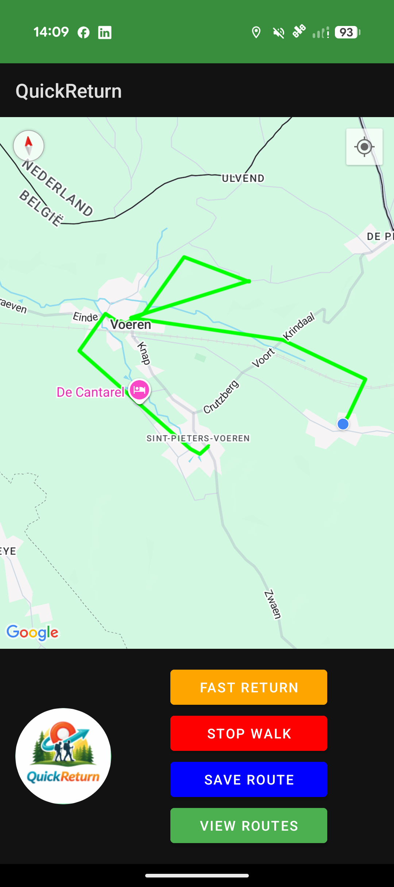
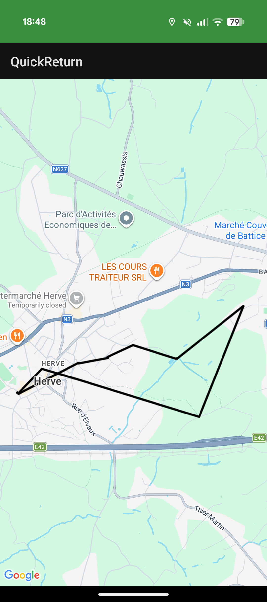
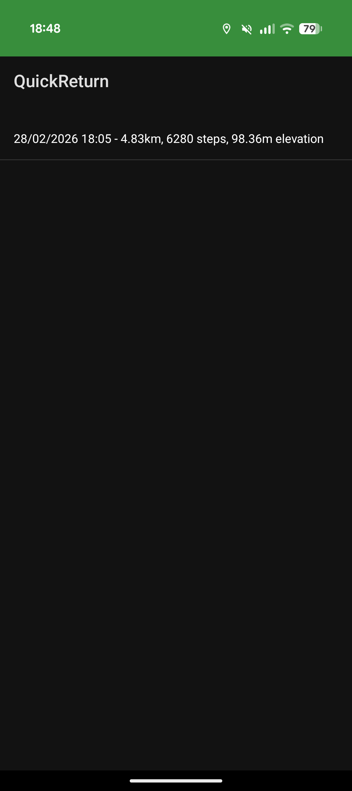
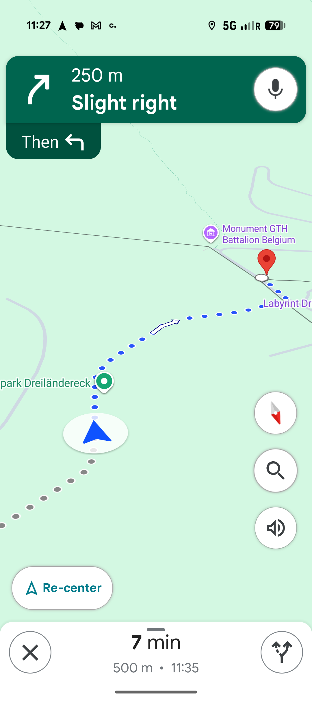

Find the shortest walking route back to your starting point. Track your walk, measure distance, and return safely with ease.
Download on Google PlayQuickReturn is a smart walking route tracker and navigation app designed for hikers and walkers. Record your walking routes, track distance, and quickly find the fastest way back to your starting point using a reliable GPS-based return navigation system.

Route Tracking

Return Route

Saved Routes

Route Details
Never get lost again. QuickReturn ensures you always have a clear and fast route back. Whether you are walking in the city or hiking in nature, this walking navigation app keeps your journey safe and simple.
Is QuickReturn free?
Yes, the app is free to download.
Does it work offline?
GPS tracking works during your walk. Some features may require signal.
Who is this app for?
QuickReturn is designed for walkers, hikers, and outdoor enthusiasts.
Can I save my routes?
Yes, all routes can be saved and reviewed later.
Start tracking your walking routes and always find your way back with the best walking route tracker app.
Install on Google Play